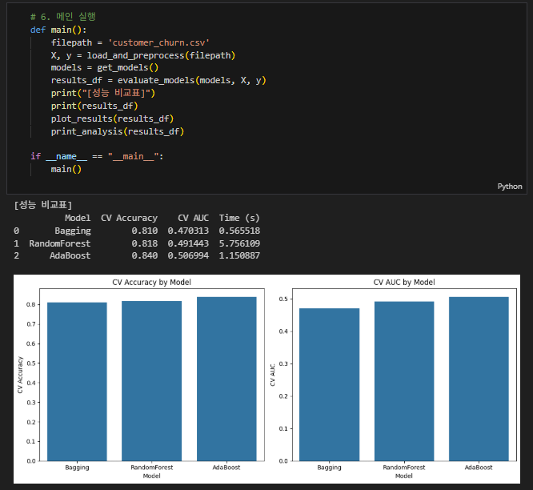

1. 프로젝트 개요
- 프로젝트명: 고객 이탈 예측을 위한 앙상블 모델 비교
- 개발 기간: 2023.10 – 2023.12
- 참여 인원: 1명
- 나의 역할: 데이터 전처리, 모델 개발 및 성능 평가, 시각화, 비교 분석 및 보고서 작성
2. 기술 스택
- 사용 언어: Python
- 프레임워크/라이브러리: scikit-learn, pandas, matplotlib, seaborn
- 데이터베이스: 없음 (CSV 파일 기반)
- 개발 도구: Google Colab, Jupyter Notebook
3. 주요 기능
- 핵심 기능 소개: 고객 이탈 여부를 예측하기 위한 세 가지 앙상블 모델(Bagging, RandomForest, AdaBoost) 적용
- 기술적 차별점: 동일 조건 하에서 모델 구조별 성능 정량 비교, 변수 중요도 시각화
- 성능 최적화 내용: 5-Fold 교차검증 적용, 수치형 변수 표준화, 불균형 레이블 처리 고려
4. 문제 해결 사례
- 직면한 문제: 모델별 성능이 예측 지표마다 다르게 나타나 최적 모델 선정 기준 설정이 어려움
- 해결 과정: AUC(Area Under Curve)를 주요 기준으로 선정, 부가적으로 정확도와 실행 시간 비교
- 결과 및 학습점: 단일 지표에 의존하지 않고 다양한 평가 지표를 조합해 실용적인 모델 선택 기준 설정의 중요성을 배움
📊 모델링 및 결과 분석
- 사용 데이터: customer_churn.csv
- 컬럼 구성: 나이, 월 사용량, 계약 기간, 고객센터 연락 횟수, 연체 여부, 이탈 여부 등
- 모델: BaggingClassifier, RandomForestClassifier, AdaBoostClassifier
- 평가지표: 정확도(Accuracy), AUC, 학습 시간
- 결과: AdaBoost가 AUC 기준 가장 우수한 성능을 보여 최종 추천 모델로 선정됨

🔍 프로젝트를 통해 얻은 점
- 앙상블 모델의 구조적 차이와 장단점을 직접 비교하며 실험적으로 이해할 수 있었습니다.
- 성능 지표(AUC, 정확도 등) 외에도 실무에서 중요한 학습 시간, 예측 속도 등의 요소를 고려하는 법을 익혔습니다.
- EDA 및 전처리의 중요성을 체감하며 데이터 품질이 모델 성능에 미치는 영향을 체험했습니다.
- 보고서 작성 및 시각화를 통해 결과를 직관적으로 전달하는 커뮤니케이션 능력도 함께 향상되었습니다.